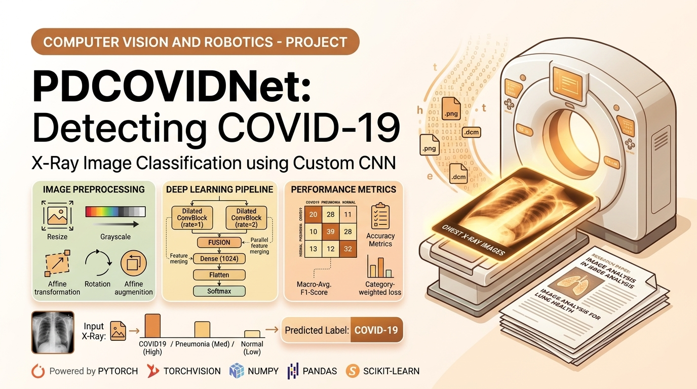
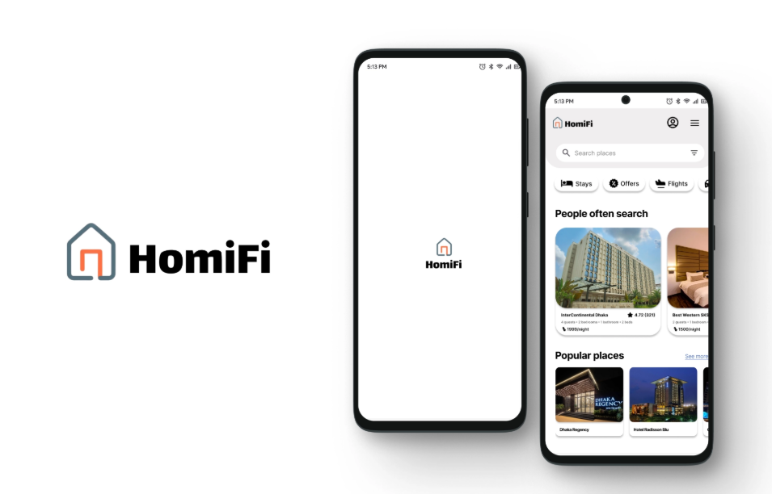

WHAT I'VE BEEN WORKING ON
My Projects
A collection of projects exploring Artificial Intelligence, Natural Language Processing, and practical applications of machine learning alongside other side projects.
AI & Machine Learning

Research Evidence Agent (Ongoing)
Python · Gemini API · Qdrant · FastAPI · Docker
Research Evidence Agent (Ongoing)
Python · Gemini API · Qdrant · FastAPI · Docker
A document-grounded research assistant that retrieves relevant information from academic papers and generates answers based on the retrieved evidence.
The application uses vector search for document retrieval and a Gemini model for answer generation, with a FastAPI backend and Docker deployment.
Year: 2026

NLP Study Assistant
Python · Gemini API · Google GenAI SDK
NLP Study Assistant
Python · Gemini API · Google GenAI SDK
A command-line AI learning assistant designed to support beginner NLP students. It provides concept explanations, practice questions, and feedback on submitted answers.
The application also incorporates conversation history management, token tracking, response validation, and retry handling.
Year: 2026
GitHub Repository ↗

Community Stress Tracker AI
Python · PyTorch · DistilBERT · Streamlit
Community Stress Tracker AI
Python · PyTorch · DistilBERT · Streamlit
A group-developed AI system that analyses social media text to estimate community stress levels across five emotion classes.
Built using DistilBERT, the system achieved 82.67% accuracy and includes stress scoring, score normalisation, and batch-level aggregation.
Year: 2026
GitHub Repository ↗

PDCOVIDNet-2
Python · Gemini API · Qdrant · FastAPI · Docker

PDCOVIDNet-2
Python · Gemini API · Qdrant · FastAPI · Docker
A document-grounded research assistant that retrieves relevant information from academic papers and generates answers based on the retrieved evidence.
The application uses vector search for document retrieval and a Gemini model for answer generation, with a FastAPI backend and Docker deployment.
Year: 2026
GitHub Repository ↗

IronyScope: Irony Detection in Tweets
Python · NLTK · Scikit-learn · TF-IDF
IronyScope: Irony Detection in Tweets
Python · NLTK · Scikit-learn · TF-IDF
A text classification project focused on identifying ironic content in tweets using Natural Language Processing techniques.
The implementation uses NLTK for text preprocessing and n-gram TF-IDF features with a Multi-Layer Perceptron classifier.
Year: 2026
GitHub Repository ↗Other Projects

Vista.Q
Figma · UI Design · Wireframing · Prototyping
Vista.Q
Figma · UI Design · Wireframing · Prototyping
A collaborative UI design designed on behalf of TechnoVista Ltd. presents 'Vista.Q', a real-time quality tracking system for garment factories.
It streamlines production, reduces defects, and enhances efficiency through a user-friendly, device-compatible interface.
Year: 2025

Quality Information System
Figma · UI Design · Wireframing · Prototyping
Quality Information System
Figma · UI Design · Wireframing · Prototyping
A collaborative UI design designed on behalf of TechnoVista Ltd.representing the Quality Information System (QIS), a digital platform by the Ministry of Agriculture of Bangladesh to deliver fast, transparent, and accessible agricultural services.
It highlights weather updates, service access, and user-friendly navigation to support farmers and stakeholders.
Year: 2024

HomiFi - Accommodation Booking System
Figma · UI Design · Wireframing · Prototyping

HomiFi - Accommodation Booking System
Figma · UI Design · Wireframing · Prototyping
A collaborative UI design project for a comprehensive accommodation booking system that streamlines the process of finding and reserving various types of lodgings, including hotels, apartments, and unique private rentals. Unlike traditional booking platforms focused on large-scale hospitality, HomiFi targets the growing need for affordable, locally hosted options such as private rooms and smaller apartments—accommodations that often lack visibility due to limited resources.
The system addresses this gap by providing a unified platform where users can easily search, view, and book a wide range of stays. This project meets both functional and non-functional requirements, offering a clear roadmap for developers and stakeholders to align on goals, features, and constraints, ultimately ensuring a smooth and inclusive booking experience.
Year: 2024

Imbricating Colorful Squares
Python
Imbricating Colorful Squares
Python
A final graphics project developed using Python for the Code In Place Certification course.
The design features a series of nested, vibrant squares, demonstrating the use of loops, color theory, and geometric precision.
Year: 2023
GitHub Repository ↗